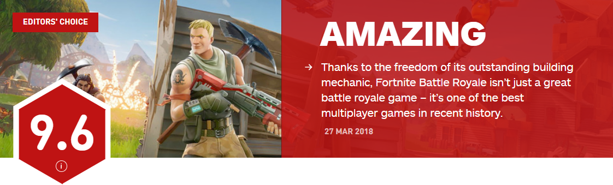
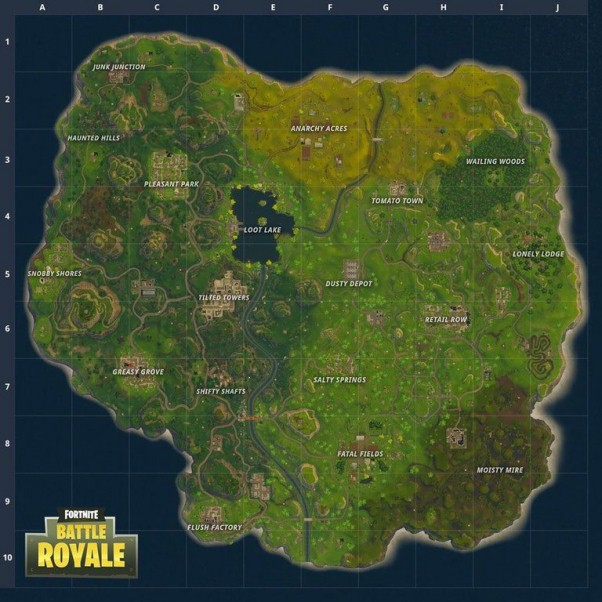
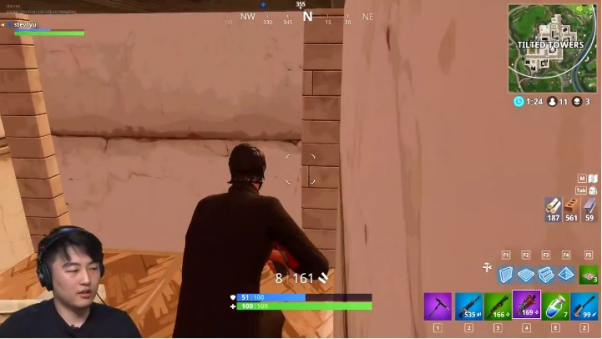
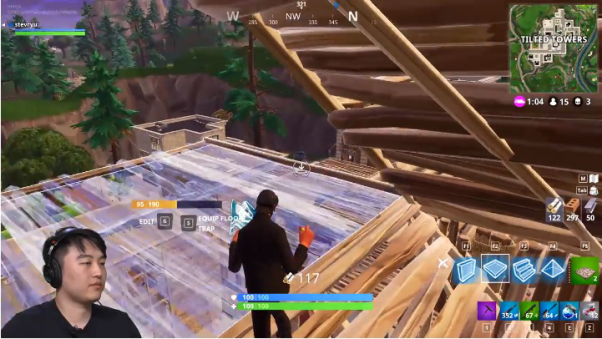
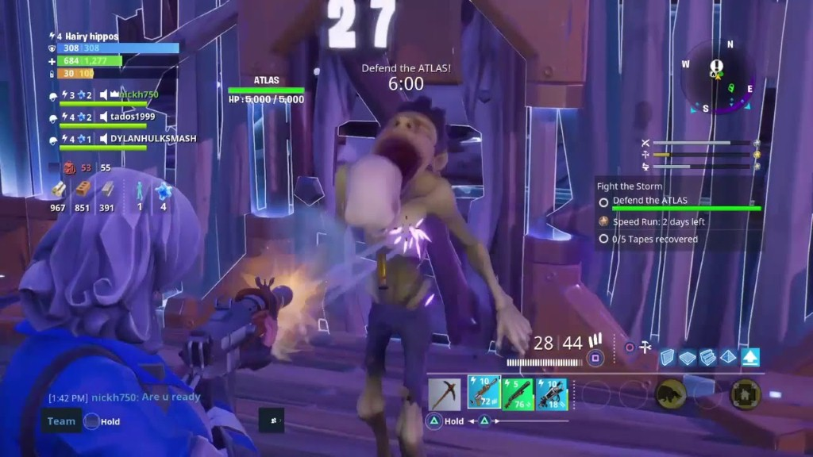

IGN堡垒之夜评测：游戏史上最好的多人游戏之一
[ 2018-04-04 13:23:45 来源：IGN 作者：AUSTEN GOLSIN ]

最近，著名国外游戏评测网站IGN为当前炙手可热的游戏《堡垒之夜》做了一次评测打分，最终结果更是不负众望得给出了全平台9.6的超高分值并附上评语：“依附于游戏中的自由建造系统，堡垒之夜已经不仅仅是一款优秀的大逃杀游戏，它已经成为了游戏史上最好的多人游戏之一。”
《堡垒之夜》是由EpicGames公司推出的百人求生游戏，在游戏刚推出时，它的名字叫做《Fortnite Save the World》，在2017年初，开始有越来越多的玩家入坑，《堡垒之夜》也经过长时间的完善，被Epic公司重新命名为《FortniteBattle Royale》。
《堡垒之夜》的地图起码比起《绝地求生》而言要小不少，即使你需要徒步跨越整个地图到任意风暴之眼的中心，因为缩圈而死在安全区外的可能性也很小。在岛上的几个大型城市每一个都有独自风格的建筑并且风格鲜艳，整个地图上数百个房子里会随机出现宝箱，里面有各种风格的枪，炸药和药品。

《堡垒之夜》PVP模式地图
《堡垒之夜》的库存机制非常简洁明了,玩家一共只有五个格子使用，所以玩家需要自己平衡他们所想要的装备，药品和手雷的数量。玩家在游戏过程中需要时刻保持一个知道自己需要什么的状态，并要学会适当的放弃一些物品。
经过了这个游戏长时间的演变之后，现在大部分的玩家的战术基本已经固定：玩家先用狙击枪或者散弹枪开一枪（如果运气好的话可以直接结束战斗），如果没有成功击杀，玩家就要换成突击步枪或者战术猎枪进行枪战。

比起《绝地求生》长时间的对峙和高要求的准度，《堡垒之夜》的战斗经常会在一瞬间结束,然而这个游戏又不仅仅是瞄准和射击你的对手，“建造”才是让这个游戏与其他求生游戏不同的地方。任何在地上的东西都可以被采集成木头，石头或者钢铁然后建造出墙体，台阶和楼层（只要建筑整体有接触到地面即可）。利用这样的建造系统，最后成型建筑的样子有非常多的可能性。当然，建造系统的用处并不仅仅是建造房子，《堡垒之夜》最常见的游戏技巧，就是建造台阶和地板可以让玩家瞬间爬上山顶（边建斜坡边爬即可）或者从山上落下不受伤害（半空中建造地板减少缓冲，只要保证地板的一边接触山体即可）。

《堡垒之夜》独具特色的建造系统
在游戏当中，有时候当你的步枪没有子弹的时候，你可以直接利用资源搭造斜坡直接冲到对面玩家的堡垒上面用散弹枪对A。你会发现，在近距离的对战当中，散弹枪的杀伤力是不可想象的。对于一些玩《绝地求生》而对散弹枪持有偏见的玩家而言，这个游戏也许会改变你对散弹枪的看法。
虽然每种操作都比较简单，将它们拼凑在一起还是需要练习，对于大多数玩家而言，刚开始玩这个游戏还是会体验一些挑战。
玩家还可以搭造斜坡上房顶直接进阁楼寻找宝箱，或者造墙来阻挡敌人的子弹。还有一些比较新奇的想法，比如从被击倒的队友周围造四面墙并封住房顶抵挡所有方向的攻击的同时将队友救起（当然，全封住也不用担心出不去，墙上是可以造门的）；或者建造一个诱饵堡垒，自己躲到树后进行攻击。
经过长时间的练习许多玩家也开始寻找自己的建造风格。有些玩家喜欢造高塔，有些玩家喜欢造房子，而有些玩家喜欢造像迷宫一样的堡垒，当敌人走到迷宫尽头的时候，你会拿着散弹枪直接给他来个痛快。
玩家在游戏中会开始慢慢学着计算自己的资源够不够和敌人开战，资源的数量也许会决定玩家的计划，如果资源多子弹也多的话，玩家可以自己搭堡垒和对面慢慢耗，而如果资源不够的话，也许你就只能搭桥进对面堡垒尝试速战速决了。
《堡垒之夜》自从去年7月份第一次上线以后，Epic公司加入了非常多新的内容，新的城市，新的地图，甚至于新的游戏模式，比如今年早些时候推出的50vs50模式或者最近刚推出的Blitz模式（可采集资源和箱子的数量是普通模式的两倍，适合喜欢建造的玩家）。

《堡垒之夜》中的商城
在游戏商店中，可以购买的锄头和玩家外形都十分精美。“每日商店”其中的商品每隔二十四小时更新一次，而“传说商店”中的商品一周更新一次，并且有可能只卖一回（比如情人节推出的粉色装扮和中国新年时推出的悟空皮肤）。最后，只需要十美元，玩家可以解锁100层独特挑战，锻炼自己的技术。
因为有大量的玩家同时进行游戏和游戏的速配系统，每次玩家的死亡时间和再开始游戏的时间基本不会超过一分钟。
不得不说的是，不管在手机，PS4，XboxOne还是PC端，《堡垒之夜》从不会在激烈的枪战中掉帧，相比起《绝地求生》是一个极大的优势。
如今《堡垒之夜》在手机端上线之后，玩家可以在不同平台玩这个游戏，虽然手机端的分辨率会较低，但是操作方面并没有很难控制。楼主亲测，手机上基本可以完成电脑中的所有操作，只不过大约需要用四倍左右的时间，但是所有玩家都是平等的，只不过看谁更熟练罢了。
《堡垒之夜》滑稽的风格和独特的设计建造的混合系统使玩家能够自由选择自己的游戏风格，这使它在其他求生游戏中脱颖而出。
编辑推荐

返回
绝地求生（PLAYERUNKNOWN'S BATTLEGROUNDS）
搜索